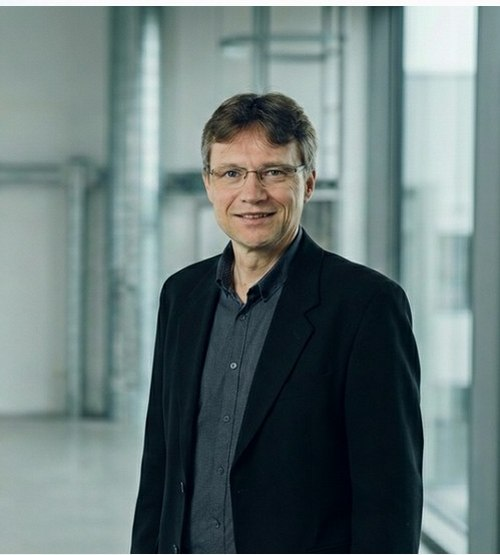

ERFAHRUNG, DIE ORIENTIERUNG GIBT.

KALothar
Kahlert
62 Jahre
Erfahrener Werksleiter mit über 30 Jahren in der Lebensmittelindustrie, spezialisiert auf Mitarbeiterführung, Lean Management und KVP.
- bringt langjährige Führungs- und Produktionserfahrung ein
- beurteilt Prozesse realistisch aus Sicht von Verantwortung und Alltag
- schafft Strukturen, die für Führung und Mitarbeitende tragfähig sind
„Ich verbinde moderne Führungskultur mit nachweisbaren Erfolgen in Effizienzsteigerung, Digitalisierung und Prozessoptimierung. Mein Antrieb ist es, starke Teams aufzubauen und nachhaltige Produktionsstrukturen zu gestalten."